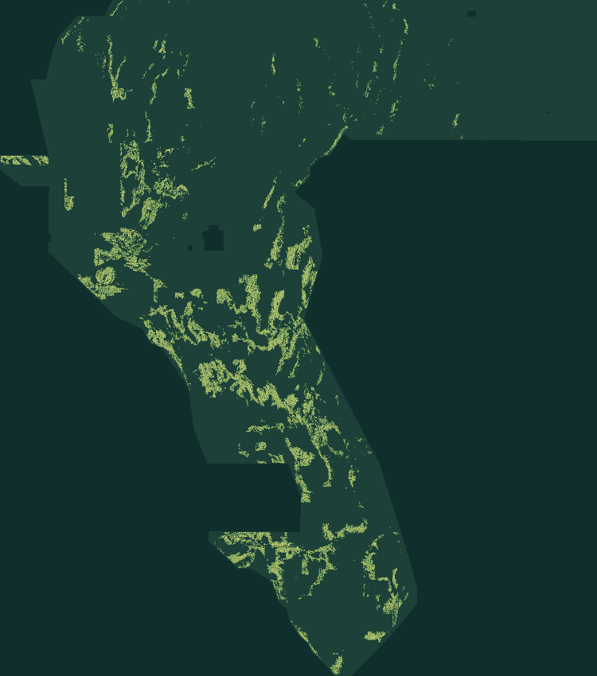

01 — FORENSIC EVIDENCE
44,090 → 37,654
Exact subset identity, zero disagreement. Thinning thick rankings into isolated dots cuts wasted false-positive mass while preserving 300 m coverage.
Read the scientific explanation ↗GEMSDOE79 / G79-STEPCO S1 · MULTI-FIELD STEP-DIPOLE RANKING
AUTOMATED VERDICT: NEGATIVE · DO NOT SUBMIT37,654 fault dots computed this session from the competition feature stack — a fresh ranking, byte-distinct from all 992 registry submissions. It passes format and leakage checks. It does not pass the preregistered promotion gate.
Single band · float32 · EPSG:32611 · 100 m · 3730 × 3292 · all values in [0,1]
Executive summary: exactly how submission works & why this file is blocked ↗
New this session (2026-10-22): lane G79-STEPCO replaces the archived E1 fabric-offset lane as canonical. Two experiments (S1, S2-COVER) were run under preregistration; both are reported with failures intact. Audit, amendment D-1 & limitations ↗

01 / THE DECISION
Format, leakage canaries and rank-novelty pass. The holdout-promotion gate (beat the incumbent with CI above zero) and protocol-uniqueness certification do not.
A new field, not a renamed prior submission. The negative verdict stays attached to every download.
These are identifiers for reproducibility, not an instruction to upload this file.
Automatic re-read, exact reference-grid comparison and ZIP round trip. No manual inspector is required.
THE HOLDOUT, EXACTLY
Buffered whole-component hide-and-recover, shared evaluator gems57-pooled-hide-v2, pooled DTI (α=0.2, β=0.8, 300 m kernel). Catalogue recovery is not hidden-fault discovery.
S1 scores 0.0946 [0.0778, 0.1110] (seed 20) and 0.0948 (seed 30). The fold-fair H33-lineage incumbent scores 0.0961 / 0.0989 on the same instrument; paired differences span zero on both seeds.
Uniqueness, all 992 indexed rasters accounted for: worst surface ρ = 0.518 (< 0.90), worst overlap vs 748 comparable sparse emissions = 0.647 (< 0.70) — yet space-filling registry priors (a 206,895-dot lattice; whole-footprint surfaces) still fire the literal overlap test on any nonempty candidate. Both readings are published.
Open the machine run card ↗ · Main-scan uniqueness evidence (989 records) ↗02 / WHY H33 LED THE FAMILY
H33 is exactly D2.8 minus its 6,436 catalogue-near dots. Emission efficiency under a max-cover metric explains the family pattern; its 0.2778 has no artifact-linked receipt, and GEMSDOE32 itself labels the file unscored.
Exact subset identity, zero disagreement. Thinning thick rankings into isolated dots cuts wasted false-positive mass while preserving 300 m coverage.
Read the scientific explanation ↗Faults step topography, gravity and basement depth across one trace. STEPCO scores cross-trace step dipoles in five fields plus lidar scarps and radiometrics, in one fixed model refit per holdout draw. Mimic: facies pinch-outs, fan lobes, survey seams.
Hypotheses, lane & preregistration ↗Kernel-cover placement (S2, archived) reached 0.0935 / 0.0961 — same tie. The third experiment slot was deliberately not spent searching the holdout. Negative results are deliverables.
STEPCO run card JSON ↗ · Seed-20 holdout ↗